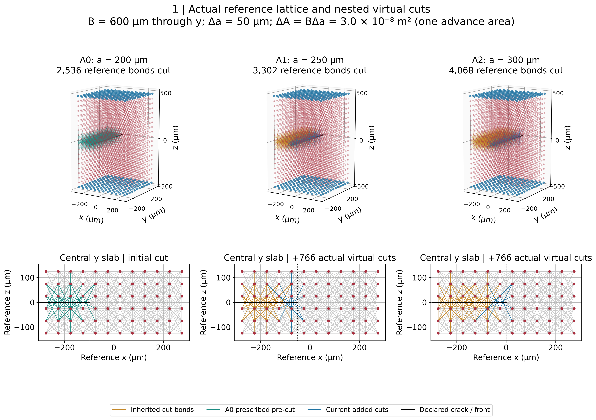
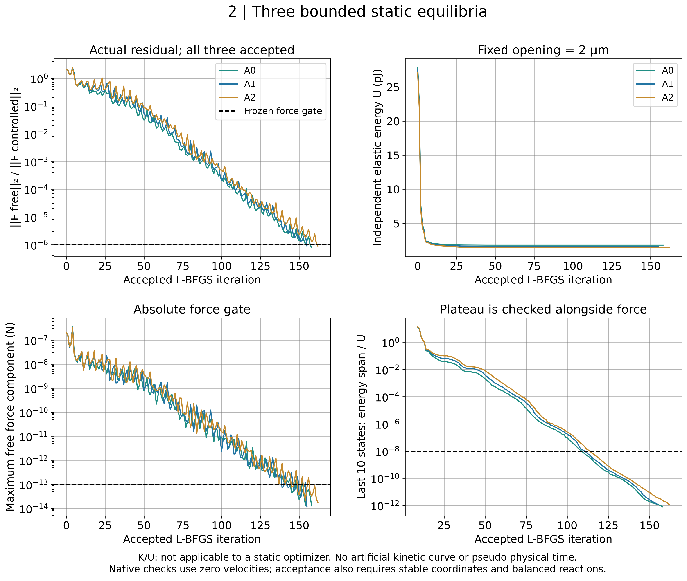
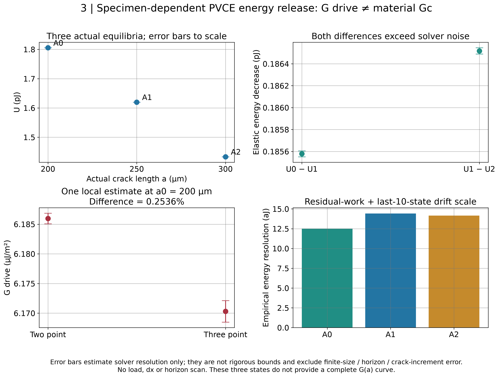
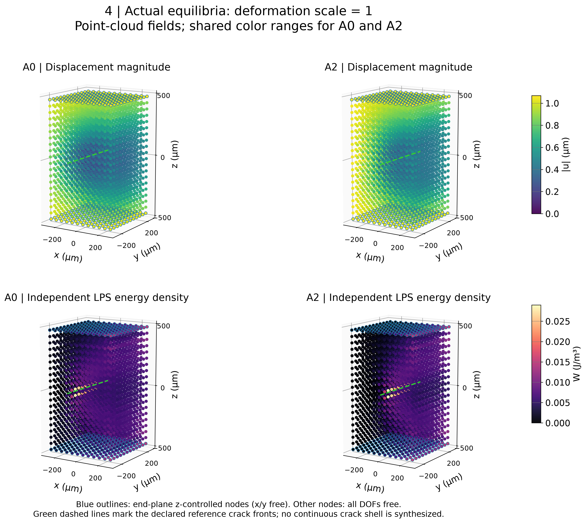

固定位移总开度 2 µm；a=200/250/300 µm。三个状态均通过预注册平衡检查。G_two=6.18596×10⁻⁶ J/m²；G_three=6.17031×10⁻⁶ J/m²；差异0.2536%。结果不是材料固有 Gc，未进行离散收敛认证。

SVG · Fig1_virtual_crack_topologies

SVG · Fig2_equilibrium_convergence

SVG · Fig3_PVCE_energy_release

SVG · Fig4_equilibrium_fields